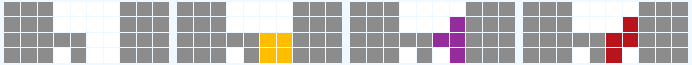

게임을 시작할 때 주로 사용하는 빌드입니다.
실력 측면에서 개막 빌드는 1~3개 정도만 알면 됩니다.
거기에 상대가 4줄 콤보 빌드(4wide)를 사용할 때를 대비해 4줄 콤보 빌드를 배우면 충분합니다.
일부 빌드는 게임 시작 때 많이 사용되어서 여기에 넣기는 하였지만, 게임 중반에도 사용되는 경우가 있습니다.
빌드를 배우기 전에(혹은 1~2개만 배운 이후에) 기초와 평평하게 쌓기를 익히면 좋을 것입니다.
목차
1. DT포
2. BT포
3. 4줄 콤보 (4W)
DT포 첫 번째 가방과 두 번째 가방
게임이 시작되면 아래와 같은 형태를 만듭니다.
왼쪽 그림은 첫 번째 가방, 오른쪽은 두 번째 가방입니다.
형태를 만들 때 주의하실 점은
두 번째 T는 쌓기에 사용하면 안 된다는 점입니다. 익숙해지면 두 번째 T는 쌓기에 이용할 필요가 없습니다.
L, J, S, Z의 배치를 조금 바꾼 아래 형태도 익혀 두면 좋습니다.
블럭 쌓는 순서는 조금 다르지만 결국 모양은 위에서 소개한 모양과 같다는 것을 알 수 있습니다.
이런 식으로 변형이 가능하기 때문에, 상당히 높은 확률로 DT포를 만들 수 있습니다.
두 번째 L과 J 위치는 고정이지만, IOSZ의 위치는 상황이나 취향 따라 다르게 만들 수도 있습니다.
DT포의 또 다른 형태로는 아래 그림이 있는데 빌드를 DT로 통일하고 싶으신 분들이 종종 사용합니다.
다음에는 상황에 따라 아래 형태를 만듭니다.
이렇게 DT포는 외울게 별로 없어 초보자분들께 자주 애용되는 빌드입니다.
BT포 첫 번째 가방
T스핀을 왼쪽·오른쪽에 만들 수 있습니다.
여기서는 오른쪽 형태를 기준으로 설명드리겠습니다.
첫 번째 가방은 미노의 순서에 따라 아래의 형태 중 하나를 만들면 됩니다. 미노 배치는 다르지만 결과물은 모두 같습니다. 이건 그림을 보면서 몇 번 따라해 보시면 금방 익히실 수 있을 것입니다.
여기서는 특별히 I스핀과 J스핀을 배워 두면 좋겠습니다. C형태를 만들 때 I스핀을 알아야 I가 조금 늦게 나와도 대처를 할 수 있고, D형태를 만들 때 J스핀(T스핀을 왼쪽에 만든다면 L스핀)을 배워 두어야 J가 조금 늦게 나와도 대처를 할 수 있습니다.
BT포 두 번째 가방
NEXT의 순서에 따라 아래 두 형태 중 하나를 만들면 됩니다. 미노의 배치는 조금 다르지만 두 가지는 실질적으로 같은 형태입니다. T미노는 일단 T스핀 더블에 사용하는 게 목표입니다.
두 번쨰 가방에서는 아래와 같은 스핀을 사용할 줄 알아야 합니다.
그런데 문제는 두 번째 가방 순서가 아래 그림처럼 나오면 매우 곤란해진다는 것입니다.
LJ가 모두 늦게 나오고 T와 I가 빨리 나왔을 때입니다. 아래처럼 나오면
T스핀을 포기하거나 BT포를 포기해야 합니다. 아니면 세 번째 가방 운에 따라 진행할 수도 있기는 합니다.
세 번쨰 가방 운에 따라 진행하는 방법은 몇 가지가 있습니다. 예를 들어 두 번째 가방에서 I가 빨리 나오고 세 번째 가방의 Z가 첫 번째에 있는 게 보이면 아래처럼 진행할 수 있습니다.
아래처럼 세 번째 가방에서 I가 빨리 나오는 경우네는 왼쪽에 먼저 I를 놓는 플레이도 가능합니다.
만약 BT포를 포기한다면 아래와 같은 형태로 진행할 수도 있습니다. 그냥 예시입니다.
두 번째 그림은 임페리얼 크로스입니다. 첫 번째 그림은 임페리얼 크로스에 STMB 케이브까지 만든 모습입니다.
마지막 그림은 L스핀을 활용하는 것입니다. 나머지 그림은 그냥 평범하게 T스핀을 하는 것입니다. T스핀 더블을 할지 싱글을 할지는 취향 문제입니다. T스핀 싱글을 하는 게 지형은 좋지만 공격력이 약하다는 단점이 있습니다.
BT포 세 번째 가방
세 번째 가방부터는 형태가 나뉩니다.
미노 순서에 따라 다음의 형태 중 하나를 만들면 됩니다. Z미노와 T미노의 위치는 고정이기 때문에 나머지 5개의 미노만 고려하면 됩니다.
다만 SLZJIOT처럼 S가 너무 빠르고, T가 너무 느리면 못 만들 때도 있습니다.
BT포 네 번째 가방
세 번째 가방의 결과물이 둘이기 때문에 형태를 나누어 설명합니다. 3-A=3-B와 3-C 두 가지 경우입니다.
네 번째 가방과 다섯 번째 가방은 밀접하게 연관이 되어 있습니다. 네 번째 가방의 형태에 따라 다섯 번째 가방으로 만들 수 있는 퍼펙트 클리어의 형태가 달라지기 때문입니다.
참고로 네 번째 가방의 마지막 미노까지 퍼펙트 클리어에 잘 맞추어 사용하면 아래에 적힌 것보다 퍼펙트 클리어 확률이 올라갑니다. 하지만 그것까지 고려하여 글을 작성하기에는 글이 너무 길어지기 때문에, 네 번째 가방에서 끊고 다음에 다섯 번째 가방으로 들어가는 형식으로 글을 작성합니다.
만약 컴퓨터 프로그램이 테트리스를 한다면 모든 경우를 고려하여 퍼펙트 클리어 확률을 100%에 가깝게 가져갈 수 있을 것입니다. 아래에는 퍼펙트 클리어 확률이 70% 정도인 형태까지만 정리하겠습니다.
3-A = 3-B 이후
위의 3-A = 3-B 형태 이후에는 네 번째 가방으로 아래 형태를 만드는 것을 목표로 합니다. 위에 적힌 숫자는 퍼펙트 클리어 확률입니다. 가능한 한 퍼펙트 클리어 확률이 높은 형태를 만들어 봅시다. H1과 H2는 실질적으로 같은 형태이기 때문에 퍼펙트 클리어 확률과 방법이 같습니다.
전부 다 외우기에는 무리가 있을 것이기 때문에 취향에 맞는 것 몇 개를 골라서 외우시기를 추천합니다.
각각의 퍼펙트 클리어 방법은 밑에서 다루겠습니다.
참고로 C와 H2는 SZ스핀을 이용해 아래와 같이 블럭을 넣을 수도 있습니다.
3-C 이후
위의 3-C 형태 이후에는 네 번째 가방으로 아래 형태를 만드는 것을 목표로 합니다. 위에 적힌 숫자는 퍼펙트 클리어 확률입니다. 가능한 한 퍼펙트 클리어 확률이 높은 형태를 만들어 봅시다. B1과 B2, H1과 H2는 실질적으로 같은 형태이기 때문에 퍼펙트 클리어 확률과 방법이 같습니다.
전부 다 외우기 어렵다면 몇 번 해 보시고 취향에 맞는 것을 골라 외우시기를 추천합니다.
각각의 퍼펙트 클리어 방법은 밑에서 다루겠습니다.
BT포 다섯 번째 가방 (퍼펙트 클리어)
BT포의 마지막 장식 퍼펙트클리어입니다. 네 번째 가방의 각각의 형태에 대해 퍼펙트 클리어 방법을 정리합니다. 퍼펙트 클리어를 할 때에는 I, T, L, J, S, Z 스핀을 알아야 좋습니다. 모두 알아야 하는 건 아니지만 모르는 게 많을 수록 확률이 낮아집니다.
그리고 그림에서 꼭 아래부터 차곡차곡 없애야 하는 건 아닙니다. 아래 그림처럼 중간을 가장 나중에 없애야 할 수도 있습니다.
3-A = 3-B 이후
위에서 본 형태를 하나씩 순서대로 봅니다. 일단 가능한 형태를 모두 나열하였습니다. 개중에는 쓸모 없는 방법도 가~끔 있습니다. T스핀을 아래로 해도 되는데 굳이 위로 한 경우가 특히 그렇습니다.
3-A = 3-B에서 나온 A에서는 아래와 같이 퍼펙트 클리어를 합니다. 대강 비슷한 것들끼리 모아 두었습니다.
3-A = 3-B에서 나온 B에서는 아래와 같이 퍼펙트 클리어를 합니다.
3-A = 3-B에서 나온 C에서는 아래와 같이 퍼펙트 클리어를 합니다.
3-A = 3-B에서 나온 D에서는 아래와 같이 퍼펙트 클리어를 합니다.
3-A = 3-B에서 나온 E에서는 아래와 같이 퍼펙트 클리어를 합니다.
3-A = 3-B에서 나온 F에서는 아래와 같이 퍼펙트 클리어를 합니다.
3-A = 3-B에서 나온 G에서는 아래와 같이 퍼펙트 클리어를 합니다.
3-A = 3-B에서 나온 H에서는 아래와 같이 퍼펙트 클리어를 합니다.
여기까지가 3-A와 3-B에서 진행되는 퍼펙트 클리어 형식과 방법입니다.
3-C 이후
3-C에서 나온 A에서는 아래와 같이 퍼펙트 클리어를 합니다. 위에서도 적었지만 T스핀을 아래로 해도 되는데 굳이 위로 한 경우도 있습니다. 일단 가능해서 넣어 놓기는 했습니다.
3-C에서 나온 B에서는 아래와 같이 퍼펙트 클리어를 합니다. 위에서 봤던 3-A = 3-B에서 나온 C와 같은 형태입니다.
3-C에서 나온 C에서는 아래와 같이 퍼펙트 클리어를 합니다.
3-C에서 나온 D에서는 아래와 같이 퍼펙트 클리어를 합니다.
3-C에서 나온 E에서는 아래와 같이 퍼펙트 클리어를 합니다.
3-C에서 나온 F에서는 아래와 같이 퍼펙트 클리어를 합니다.
3-C에서 나온 G에서는 아래와 같이 퍼펙트 클리어를 합니다.
3-C에서 나온 H에서는 아래와 같이 퍼펙트 클리어를 합니다.
3-C에서 나온 I에서는 아래와 같이 퍼펙트 클리어를 합니다.
3-C에서 나온 G에서는 아래와 같이 퍼펙트 클리어를 합니다.
3-C에서 나온 K에서는 아래와 같이 퍼펙트 클리어를 합니다.
3-C에서 나온 L에서는 아래와 같이 퍼펙트 클리어를 합니다.
3-C에서 나온 M에서는 아래와 같이 퍼펙트 클리어를 합니다.
이렇게 BT포 이후 퍼펙트 클리어까지 살펴 보았습니다. 퍼펙트 클리어를 하고 나면 깔끔하게 가방의 첫 미노부터 시작되니 다시 BT포를 쌓거나 다른 개막 빌드를 사용해서 게임을 진행하시면 됩니다.
만약 퍼펙트 클리어를 못 하는 경우에는 평범하게 진행을 해야 합니다. 아래는 예시입니다.
이렇게 BT포는 외울게 많아서 어렵습니다만 외우게 된다면 강한 빌드이니 추천드립니다.
3. 4줄 콤보 (4W)
테트리스에는 콤보라는 시스템이 있는데, 줄을 없애는 걸 연속으로 성공하면 공격 보너스를 주는 것입니다.
게임을 하면서 화면 완쪽을 보시면 Combo라고 뜨는 걸 보실 수 있을 겁니다. 쉽게 보실 수 있게 왼쪽에 체크 표시를 해두었습니다.
참고로
처음 공격하는 것은 0콤보로 취급합니다.
4줄 콤보 빌드는 바로 이 콤보를 많이 하기 위해 4줄을 비운다는 것에서 그 이름이 붙었습니다. 영어로는 4-wide combo, 4 Column Combo라고 적고, 일본어로는 4列REN이라고 적습니다.
한국에서는 영어 표기를 줄인 포와이드(또는 포와)를 많이 사용하고, 일본어 표기를 읽은 4열렌도 종종 사용합니다.
이렇게 콤보만을 위한 빌드가 만들어진 것은 콤보 수가 높으면 공격력이 굉장히 강력하기 때문입니다. 콤보 수에 따른 공격력은 아래와 같습니다.
1 → +0
2 → +1 (총계:1)
3 → +1 (총계:2)
4 → +2 (총계:4)
5 → +2 (총계:6)
6 → +3 (총계:9)
7 → +3 (총계:12)
8 → +4 (총계:16)
9 → +4 (총계:20)
10 → +4 (총계:24)
11 → +5 (총계:29)
12 → +5 (총계:34)
이후 +5
일단 7콤보(8줄)만 해도 공격량이 12니까 그냥 테트리스로 공격을 하는 것보다 강하며, 8콤보(9줄) 이상 할 수 있으면 화력이 확실히 강해집니다.
15콤보 정도면, 상대가 방어를 안 할 시 한 번에 죽일 수 있는 공격력입니다.
실제 게임에서는 상대가 방어를 하기는 하지만, 여전히 강력한 것은 맞습니다.
다른 빌드 연장선에서도 사용되는 등, 4줄 콤보 빌드 자체는 꾸준히 사용되고 있기 때문에 배워 두면 여러 모로 쓸모가 있습니다.
쌓는 방법
쌓는 방법에는 크게 두 가지가 있습니다. 왼쪽 벽이나 오른쪽 벽을 비우는 방식과, 가운데 4줄을 비우는 방식입니다.
왼쪽 벽이나 오른쪽 벽을 비우는 방식
벽쪽을 비우는 방식은 아래와 같은 형식으로 만듭니다. 저는 편의상 왼쪽을 비우는 방식을 설명하겠습니다. 오른쪽을 비우는 방식은 좌우대칭으로 생각하시면 됩니다.
벽쪽을 비우는 방식은
ⓐ쌓기 쉽다는 장점과
ⓑ방어력이 약하다는 단점
ⓒ방어력이 약하기 때문에 결과적으로 공격력도 약해질 수 있다는 단점이 있습니다.
ⓐ 쌓기 쉽다는 점은 금방 이해가 가능할 겁니다. 6줄을 이용해서 쌓기 때문에, 미노를 놓는 모양이 비교적 자유롭습니다. 실제로 위 그림을 보시면, 블럭이 누워있기도 하고 서 있기도 합니다.
ⓑ방어력이 약하다는 점도 위 그림을 보면 이해가 충분히 가능할 것입니다.
공격력을 높이기 위해 엄청나게 높게 쌓았는데, 상대방이 빠르게 공격을 하면 그 공격에 굉장히 취약합니다.
ⓒ그렇다고 공격에 견딜 수 있게 낮게 쌓으면 공격력이 약해집니다. 이런 단점이 있어서 벽쪽으로 쌓는 빌드는 시작 빌드로 많이 사용되지는 않습니다. 상대가 느린 빌드를 사용한다는 걸 이미 알거나, 상대가 실수를 해서 복구하는 데 시간이 많이 걸릴 것 같은 경우에 사용합니다.
가운데 4줄을 비우는 방식
말 그대로 가운데 4줄을 비우는 방식입니다.
가운데 4줄을 비우는 방식의 장단점은 위 방식과 대칭적입니다. ⓐ쌓기는 어렵지만, ⓑ방어력이 강합니다. 그리고 ⓒ방어력이 강하다는 장점을 이용해 공격력도 강합니다. 가운데 4줄을 비우는 방식은 아래와 같이 만듭니다.
블럭은 왼쪽 세 줄과 오른쪽 세 줄을 이용해 쌓습니다. 세 줄을 이용해서 쌓다 보니 I미노는 반드시 서있어야 합니다. O,J,L미노는 반드시 저렇게 있어야 하는 건 아니지만 다양한 형태를 만들기는 어렵습니다. 그래서 쌓는 방법을 몰라서 사용을 못 하시는 분들도 많습니다.
하지만 ⓑ쌓는 방법에만 익숙해지면 방어력이 강하면서도 ⓒ높이 쌓을 수 있다는 점 덕분에 공격력도 강하다는 장점이 있어서, 4줄 콤보 빌드를 사용한다면 가운데 4줄을 이용하는 경우가 많습니다.
여기서 방어력이 좋다는 점이 이해가 안 될 수 있습니다. 이건 테트로미노가 내려올 때 가운데 4줄을 이용해 내려오기 때문에 생기는 장점입니다. 4줄 콤보를 만들던 도중 공격을 받았다고 해봅시다. 그러면 아래와 같은 그림이 될 겁니다.
블럭들이 지붕을 뚫고 올라갔습니다. 가운데에 블럭이 있었다면 죽었을 겁니다. 하지만 가운데에 블럭이 없는 덕분에 살아남았고, 쌓았던 블럭으로 여전히 공격을 할 수 있습니다. 4줄 콤보 빌드는 공격력이 아주 강하기 때문에, 일단 살아남아서 공격을 이어간다면 상대를 이길 수 있는 가능성이 상당히 큽니다.
주의사항
4줄 콤보 빌드를 사용할 때에는 3 Residua라고 하여 아래에 3칸이 삐져나오게 만드는 게 정석입니다 (6칸을 남겨 놓고 하는 방법도 있습니다). 아래와 같은 형태를 사용하실 수 있습니다.
일반적으로 위의 형태로 시작하지만, 아래의 형태도 가능하기는 합니다.
4줄 콤보 이어가는 방법
콤보를 이어갈 수 있는 형태를 전체적으로 정리합니다. NEXT의 미노들을 보면서 가능한 한 콤보가 끊기지 않게 만드는 연습을 해봅시다.
아래 그림들은 콤보 연결 중 발생할 수 있는 상황과 그 상황에서 콤보를 이어갈 수 있는 미노 배치를 나타낸 것입니다.
따로 그림은 없지만 I미노를 눕혀서 내려 놓으면 당연히 한 줄이 없어집니다.
그리고 T미노가 상당히 많은 경우에 사용되고 OSZ미노는 비교적 적은 경우에 사용됩니다.
OSZ는 가능한 한 빠르게 처리하는 게 좋습니다.
1번 형태
2번 형태
3번 형태
4번 형태
5번 형태
6번 형태
7번 형태
8번 형태
9번 형태
10번 형태
11번 형태
12번 형태
13번 형태
14번 형태
15번 형태

16번 형태
17번 형태
18번 형태
19번 형태
20번 형태
21번 형태
22번 형태
23번 형태
24번 형태
25번 형태
26번 형태
27번 형태
28번 형태
이렇게 4줄 콤보를 쓰면 상대도 4줄 콤보가 아닌 이상 무조건 이기는 빌드이기 때문에
초보자분들께 가장 추천드립니다.